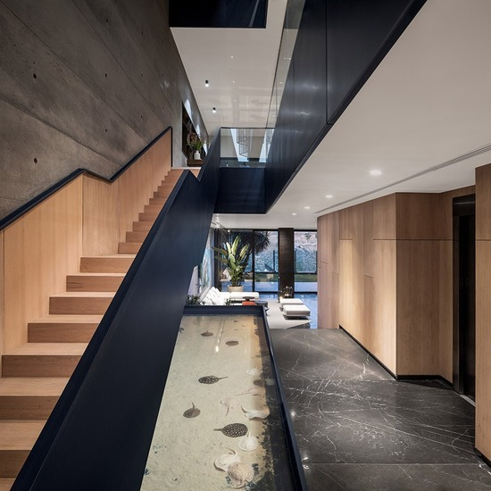
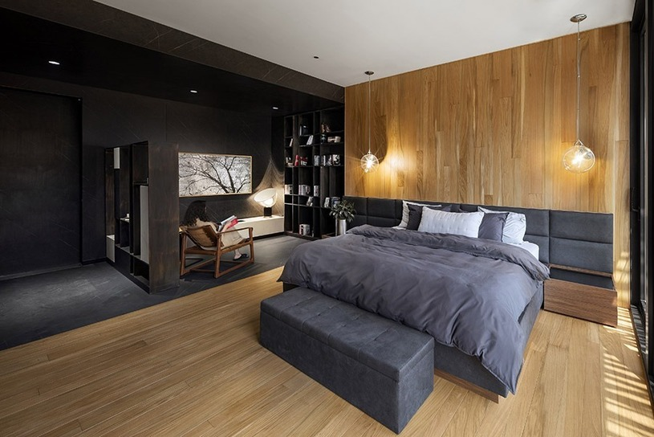
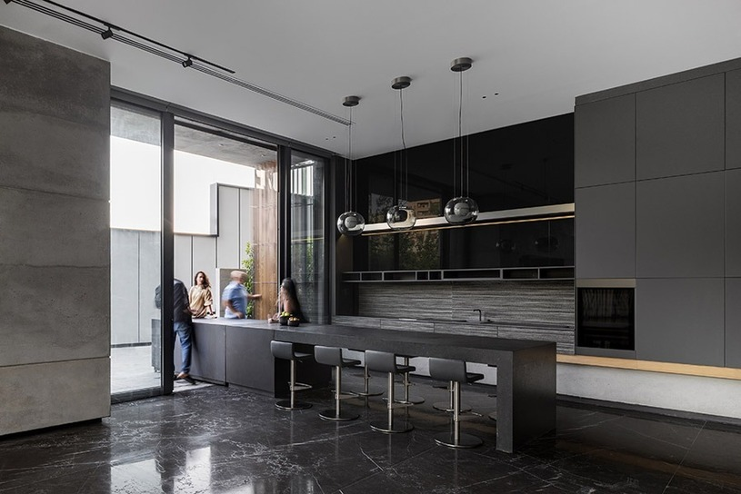
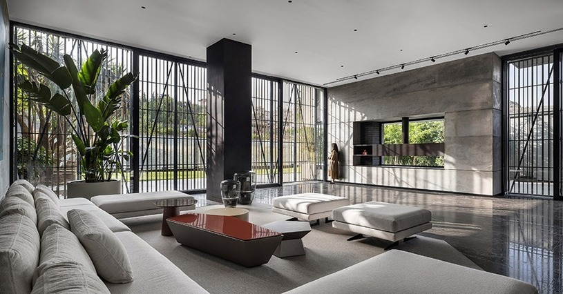
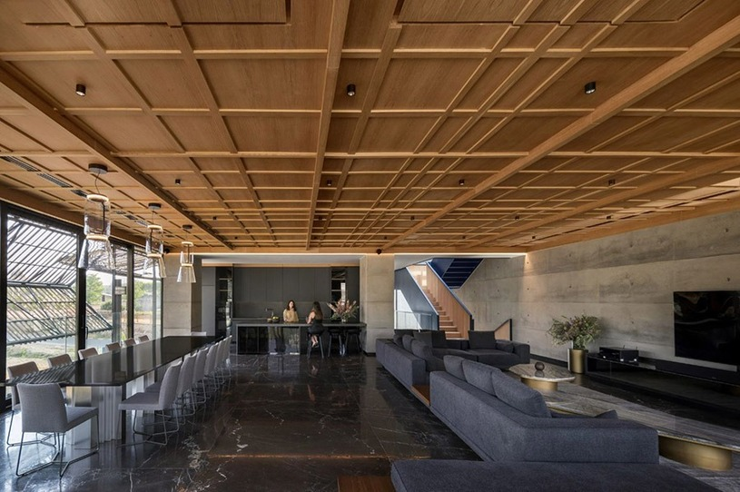
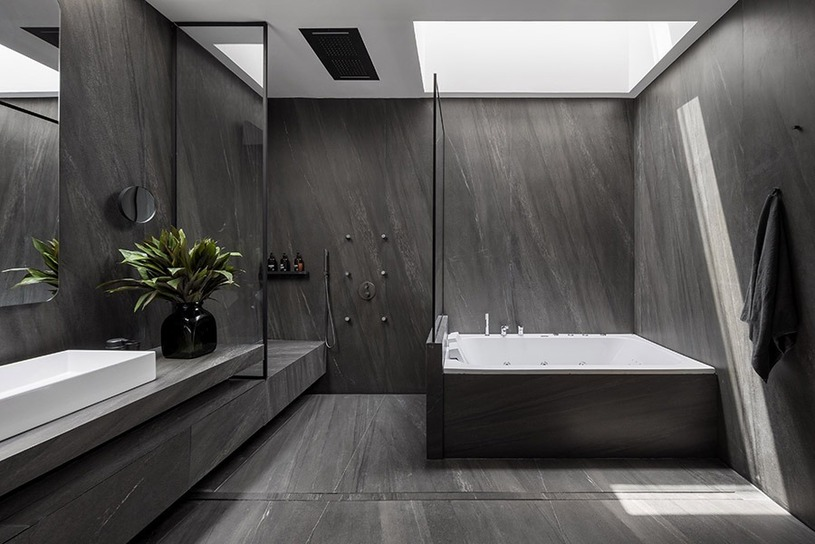
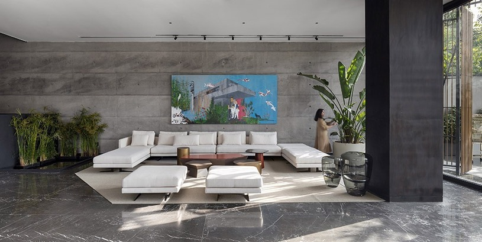
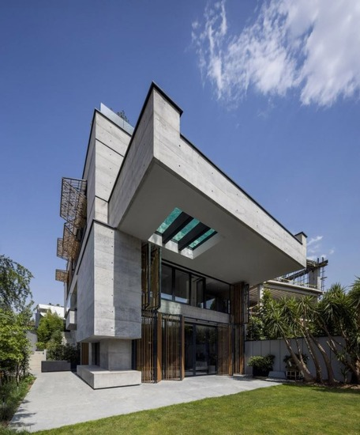
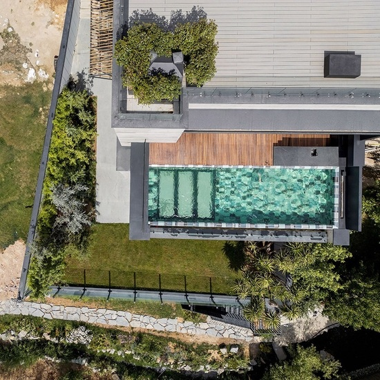
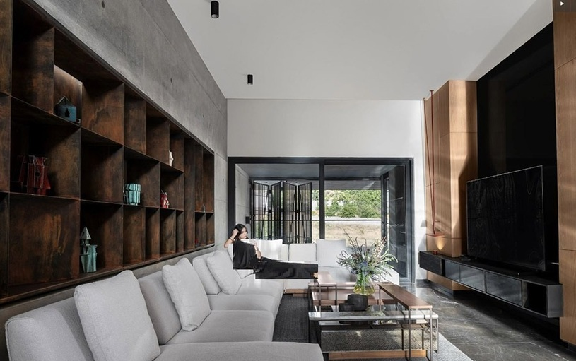

ویلای مدرن لواسان
• موقعیت: لواسان بزرگ
• متراژ زمین: ۱۱۰۰ متر مربع
• زیربنا: ۹۵۰ متر مربع
• مدت زمان اجرا: ۸ ماه
• سال اتمام: ۱۴۰۳
امکانات:
• طراحی مدرن با پنجرههای سرتاسری و چشمانداز به کوه
• استخر روباز با سیستم گرمایش خورشیدی
• سونا و جکوزی داخلی
• آشپزخانه حرفهای با تجهیزات برند Bosch
چالشهای اجرایی:
• اجرای سازه در زمین با شیب ۱۲٪
• محدودیت دسترسی به مصالح در فصل زمستان
متریال استفادهشده:
• نما: ترکیب چوب ترمو و بتن اکسپوز
• کف: پارکت ضدآب با کیفیت آلمانی
• سقف: دال بتنی با عایق صوتی و حرارتی









